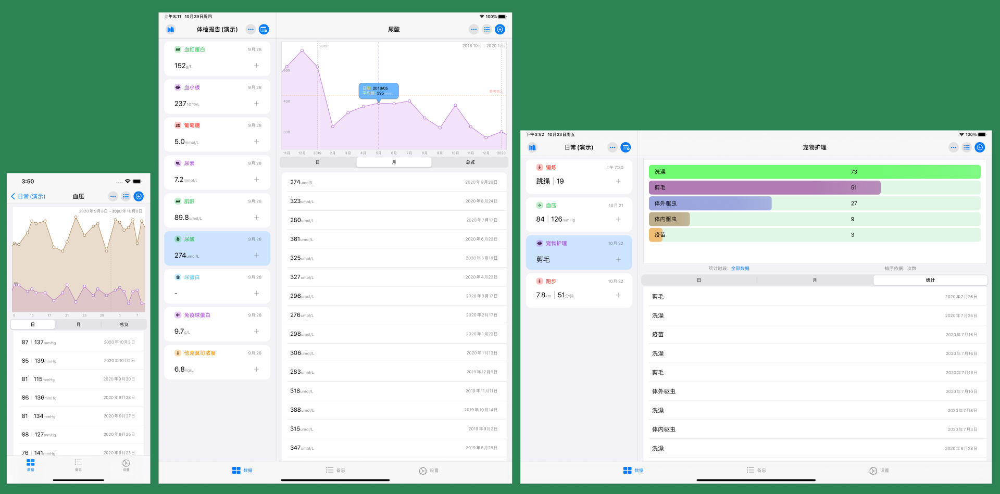
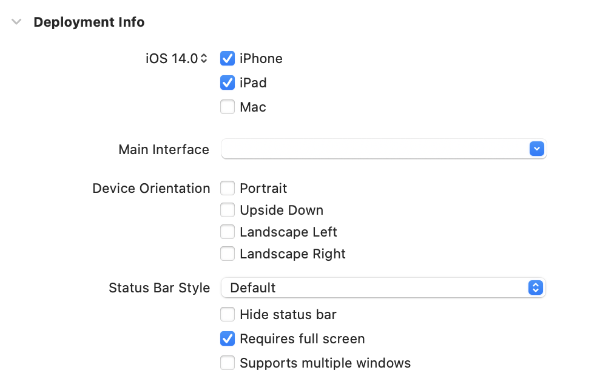

SwiftUI创建初衷之一便是可以高效、可靠的适配多个苹果的硬件平台。在健康笔记2.0开发初始，适配iPad便是我本次的设计目标之一。本文并非教程，只是我在进行本次开发中，对于适配iPad的一些教训和心得。
我是谁
app中的代码必须能高效、清晰的了解当前设备的状况，时刻搞清楚我是谁，我在哪，在干啥等等。因此在项目开始之初我便做了不少的准备并创建了一系列的代码。
比如，当前的运行设备：
1 | enum Device { |
如果想要具体了解当前运行设备的型号，Github上有人提供了代码可以返回更精准的信息。
为了能够在View中方便的利用这些状态信息应对不同的情况，还需要继续做些准备。
1 | extension View { |
这两段是我使用非常频繁的代码，在SwiftUI下，利用类似的代码可以非常容易的利用同一段代码应对各种不同的状况。
例如：
1 | VStack{ |
只有解决了我是谁的问题，后面的工作才能更好的展开
躺着还是站着
因为健康笔记以列表被主要表现形式的app，最初所以我希望在iphone上始终保持Portrait，在ipad上保持Landscape的形式。不过最终还是决定让其在ipad上同时支持Portrait和Landscape。

为了更灵活的处理，我没有选择在info.plist中对其进行设定，而是通过在delegate中，针对不同的情况作出响应。

因为无需支持多窗口，所以关闭了multiple windows。另外需要激活Requires full screen才能让delegate作出响应
1 | class AppDelegate:NSObject,UIApplicationDelegate{ |
在SwiftUI下如何设置Delegate请查看SwiftUI2.0 —— App、Scene及新的代码结构
如此便可以方便的控制自己想要的app呈现形态了。
难以控制的NavigationView
SwiftUI的NavigationView本身为了适配做了不少的工作，但效果并不好。
目前它支持两种style： StackNavigationView、DoubleColumnNavigationViewStyle，三种表现形式：单列、双列、以及三列（sidebar）。虽然看似覆盖了多数的应用，但由于没有提供更多的控制选项，因此用起来并不顺手。
比如，DoubleColumnNavigationViewStyle，在ipad上的竖屏和横屏时的呈现是不同的。左上角的隐藏按钮不可更改，不可取消。在包含sidebar的三列模式下，逻辑又有不同，不过按钮同样不提供任何替换、取消的能力。
NavigationLink只能在当前列中响应，另外并不提供控制列宽的能力。
如果想调整双列NavigationView的列宽，可以使用Introspect，参见介绍几个我在开发健康笔记2用到的Swift或SwiftUI第三方库
1 | NavigationView{ |
为了能够让ipad在竖屏或横屏状态下都固定呈现双列的模式，并且左侧列不可折叠同时也不能出现我想要的折叠按钮，我使用了一个不得已的手段。伪造了一个双列显示的NavigationView。
针对不同的设备进入不同的rootView
1 | struct HealthNotesApp:APP{ |
在ContentView_iPad中，使用类似代码伪造一个双列形式
1 | HStack(spacing:0){ |
如此一来便拥有了上面图片中iPad的显示效果。状态基本上同DoubleColumnNavigationViewStyle的形式是完全一致的。分别都可以设置Toolbar，并且分割线也可以贯穿屏幕。
1 | extension View{ |
由于在Ipad下右侧列的视图同时被用在iphone下，在iPhone下它是由NavigationLink激活的，所以仍在NavigationView中，但在iPad下，需要明确的将在放置在NavigationView中。通过 .navigationContent，结合上面的isIf，便可以灵活的控制形态了。
另外需要针对iPhone和ipad的二级View激活进行分别处理,比如
1 | if Device.deviceType == .iphone { |
Bug还是特别设计？
某些SwiftUI的默认控件在iPad和iPhone下的运行效果和预期有较大差别,
比如ActionSheet:
当前AlertSheet在运行iOS14的ipad上的显示位置是几乎不可控的。箭头的位置，内容的显示，和预期都有巨大的差别。我不知道以后都会是这样还是目前的Bug。
个人不推荐当前在iPad上使用ActionSheet。最终只能在iPad下使用Alert替代了ActionSheet。如果一定要使用ActionSheet，popover或许是更好的选择。
ContextMenu目前在iPad上有响应上的问题，同样的指令在iPhone上没有问题，在iPad上会出现无法获取值的状况。同样不清楚是Bug还是其他原因。
比如
1 | Text("click") |
这段代码在iphone上执行没有任何问题，不过在ipad上，delsheet很有可能会无法获取item。为了避免这个情况，目前只能做些特殊处理
1 | DispatchQueue.main.asyncAfter(deadline: .now() + 0.5){ |
类似上述的问题还有一些，只有当代码在ipad上跑起来多做测试才会发现其中的问题。
布局优化
由于健康笔记2.0在iPad上显示的左右两列，所以本来在iphone下运行没有问题View,在iPad下就会出现左右不对齐，不对称等问题。所以只要多调试，采用isIf多做处理，问题基本上都会比较容易获得解决。
仅举一例：
1 | List{ |
当它在iphone上作为独占屏幕的View时，显示很完美，但当它显示在IPad的右侧列时，Group上方的留空和左侧列的就不对齐，做点处理就ok了。
结尾
总之使用SwiftUI适配iPhone和iPad总体来说还是比较容易的。能否充分利用好各自设备的特点主要还是要在交互逻辑和UI设计上多下功夫，代码上的难度不大。
 支付宝打赏
支付宝打赏
 微信打赏
微信打赏
请我喝杯茶